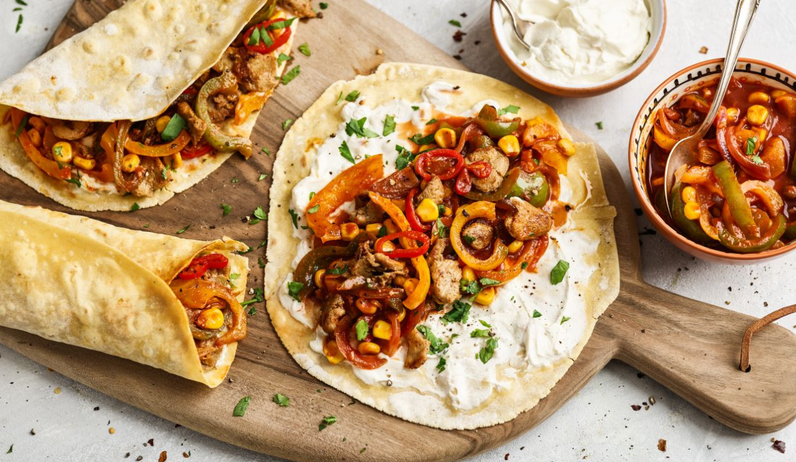

Fajita

The best Fajita recipe
How to make the ultimate, tastiest fajitas with steak, chicken, and shrimp.
Our versatile and flavorful seasoning works on everything.
Use our recipe to make chicken, steak, or a combination, and its easy!
Whenever we order fajitas, we always order the combination.
Seeing a big sizzling plate of chicken, steak, and shrimp come to the table doesnt get much better.
We love it so much that we were determined to replicate it at home.
I know cooking three proteins for dinner seems like a lot, but its not as difficult as you may think.
With our clever recipe, you can get these on the table in no time.
Ingredients
- 2 tablespoons olive oil, divided
- Salt and fajita seasoning, recipe below
- 1 pound flank or strip steak
- 1 pound chicken breast (2 medium)
- 1/2 pound shrimp, deveined with tails left on
- 1 pound bell peppers or poblano peppers, sliced (3 medium)
- 1 large onion, sliced into half moons
- 1 tablespoon minced garlic, about 3 cloves
- 3 tablespoons tequila, light beer or chicken stock
- 2 limes
Steps
- Mix the chili powder, cumin, garlic powder, oregano, and smoked paprika in a small bowl.
- Season the steak, chicken, and shrimp with salt and a generous dusting of fajita seasoning. We use 1/2 teaspoon of salt for the steak, 1/2 teaspoon for the chicken, and 1/4 teaspoon for the shrimp. Set the steak and shrimp aside while you cook the chicken.
- Heat 2 teaspoons of the oil in a wide skillet (with a lid, or you can use foil) over medium-high heat. As soon as the oil is hot and looks shimmery, add the chicken. Cook until golden, 2 to 3 minutes. Flip the chicken so that the seared side is facing up.
- Reduce the heat to low, then cover the skillet with a lid or use foil. Cook 10 to 15 minutes or until an instant-read thermometer reads 165 degrees F when inserted into the thickest part of the breast. Transfer chicken to a plate and cover loosely with aluminum foil.
- Note: Use the time while the chicken is cooking to chop the onions, peppers, and garlic.
- Pour any liquid left in the pan out and use a paper towel to wipe the bottom of the skillet. It is okay if there are bits of chicken or spices stuck to the bottom. (If you want to, you can save the liquid to add back to the pan later.)
- Put the skillet back onto the heat, increase to medium-high heat, and add another two teaspoons of oil. As soon as the oil is hot and looks shimmery, add the steak. Cook 2 to 3 minutes until brown, and then flip to the other side and let cook for another 2 to 3 minutes. Check the internal temperature. If it is not ready, turn the heat to low and continue to cook until it reaches your preferred doneness. For medium, cook to 135 degrees F. Transfer steak to the plate with chicken and cover loosely with aluminum foil.
- When the peppers and onions are ready, pile them up on one side of the pan. Place the shrimp into the pan and cook, stirring, until the shrimp are firm and opaque throughout; 2 to 3 minutes. Transfer cooked shrimp to a plate.
- To finish, turn the heat down to low, arrange the vegetables on the bottom of the skillet, stir in tequila, beer or stock, and cook for 1 minute. Take the pan off of the heat. Slice the chicken and steak then arrange the chicken, steak, and shrimp on the peppers and onions. Finish with a generous squeeze of lime.
- Serve the fajitas family style with more lime on the side as well as your favorite side dishes.